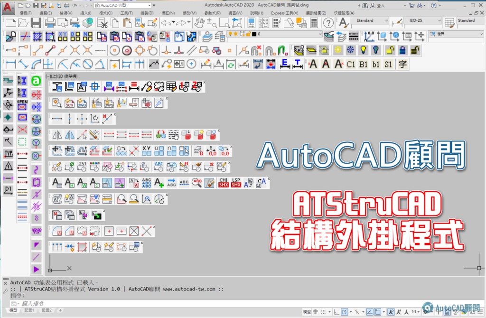

大家好：
論壇第12週年我們隆重推出「ATStruCAD結構外掛程式」，這是一個輔助AutoCAD的程式工具，目的在於彌補預設功能不足之部分，有效使用ATStruCAD結構外掛工具，可以快速批次、完成大量的工作需求，使企業或各位同仁更具職場競爭力。希望人人可以藉此外掛工具提昇AutoCAD軟體價值，輕鬆完成結構繪圖工作任務。
「ATStruCAD結構外掛程式」一套僅能安裝一台電腦（三年內免費更新及轉移授權服務）。
[展示]ACADAdviser外掛及ATStruCAD結構外掛-更新升級新功能
請直接前往版區下載需要的外掛程式
https://www.autocad-tw.com/t27998-topic
🎀 選購ATStruCAD結構外掛 🎀
👉 (點我選購結構外掛) 👈
▼ATStruCAD結構外掛線上目錄： 👉 (點我下載) 👈

一、程式說明：
1.論壇推出「ATStruCAD結構外掛程式」（僅適用微軟作業系統），會員朋友一套 NT15,000元，提供ATStruCAD結構外掛手冊，ATStruCAD結構外掛程式工具功能操作教學影片下載。
二、安裝說明：
1.「ATStruCAD結構外掛程式」採取遠端線上安裝方式，僅能安裝授權在「一部電腦」一套「AutoCAD版本」之中。
2.目前可支援 AutoCAD 2016~2026 版本（Windows作業系統），使用者可以選擇常用的AutoCAD版本進行「安裝路徑偵測步驟」。
3.用戶請先完成 >> 安裝路徑偵測步驟(點我)。
4.用戶執行 「安裝路徑偵測步驟」完畢後，即可遠端安裝「ATStruCAD結構外掛程式」到用戶的電腦。
5.購買「ATStruCAD結構外掛程式」享有三年內免費「軟體更新」服務及免費「授權轉移」服務。
6.用戶不得自行「電腦重灌」或「AutoCAD重新安裝」，用戶即可「永久」使用結構外掛程式（無使用期限）。
7.用戶（授權合約期限內）若要「電腦重灌」或「AutoCAD重新安裝」，必須先申請遠端「移除ATStruCAD結構外掛程式」，確認移除後才可以「轉移授權」手續。
註：用戶若是無申請「遠端移除外掛作業」，恕不提供「授權轉移」服務，建議安裝在新的電腦設備，比較不會有電腦死當故障而無法進行「遠端移除外掛作業」。
※ATStruCAD結構外掛程式 - Q&A：
https://www.autocad-tw.com/t23931-topic
※外掛討論區：提供操作問題及討論服務
https://www.autocad-tw.com/f66-forum
程式說明：
1.線段打斷
2.線段縮短
3.線段端點插入圖塊
4.線段加文字
5.快速過濾選文字
程式操作說明：
1.十字建構線
2.複製陣列
3.交點插入圖塊
4.線全切斷
5.指定圖層
6.變更為目前圖層
7.快速環形陣列
8.圖層隔離開關
9.剛接+文字
10.簡接+文字
程式操作說明：
1.交點插入圖塊
2.線全切斷
3.RC梁+文字
4.文字編號
註：後續增加其他影音操作影片。